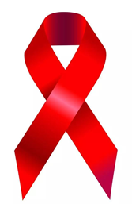

志愿者招募 | 让你我携手，推进HIV暴露前预防性治疗（PrEP）临床研究

近期，浙一医院HIV研究中心携手GSK正在进行HIV暴露前预防性（PrEP）的临床研究，以填补国内空白，希望招募符合条件的志愿者。
研究主题：GSK 206898 CabotegravirLA 药代动力学（PK）研究
一项评价HIV整合酶抑制剂——Cabotegravir（CAB）的长效注射液在中国男性非HIV感染者中的PK、安全性、耐受性和可接受性的开放型、I期研究。

什么是PrEP？
传统的艾滋病毒预防方法不足以有效的控制部分高危人群中艾滋病毒的传播。暴露前预防性治疗（PrEP：Pre-Exposure Prophylaxis）可以有效的预防艾滋病毒再高危未感染人群中的传播。
研究需要志愿者做什么呢？
符合研究条件（详情见下文）后筛选入组，项目预计持续时间：89周；
入组后，首先进入28天的口服药物研究阶段（第1-4周）；
第二阶段中，在第5，9，17，25，33周需要到研究中心进行随访（第5-41周）；
第三阶段为无给药访视期（第41-89周）
从入选到实验结束第89周随访，参与者一共需要回到研究中心17次来完成随访，随访内容包括常规医疗检查，接受研究药物，抽取研究血样样本，艾滋病毒检测等。
受试者获益评估
① 研究将向每位受试者提供一种针对HIV感染的综合预防措施，包括HIV监测和咨询，受试者可能会从HIV教育和预防活动获益
② 受试者每次访视可获得交通补助约200元，每次血样样本抽取可获得营养补助约300元；
受试者风险评估
本次同期实验已在美国FDA进入临床三期，就目前结果分析，附加风险较小。
受试者入选标准
研究参与者需为18-65岁的成年男性，具有获得HIV的风险，具体定义为在过去24个月内至少有一位随意性伴侣，且即时监测（POC）HIV测试结果为无反应，筛选时没有检测到HIV-1 RNA。
同时需满足非HIV高风险获得者，且不具有其他高风险的受试者。

看不明白没关系，有疑问也没关系，只要你有兴趣，欢迎大家咨(sao)询(rao)我们的志愿者和浙一医院的团队！
美丽温柔的志愿者小哀：18867152107，或者后台留言微信号，小哀会来找你哒！
专业且亲和的浙江大学医学院附属第一医院的HIV团队（朱彪，解奕瑞，黄莺）：0571-87236416，17764540271
地址：杭州市庆春路79号浙一医院感染科9号楼3楼307访谈室